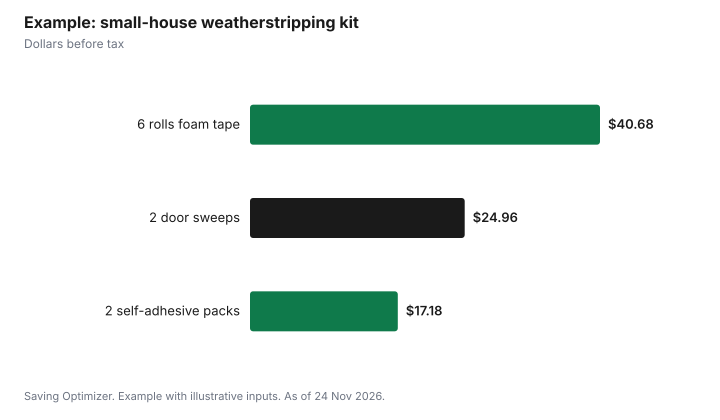

Utilities · Canada
Weatherstripping Doors and Windows in Canada: Materials That Survive Winter

Pick weatherstripping by the gap size and how often the door or window opens. Foam tape is cheap and fine for windows that stay shut. Doors need tougher rubber or vinyl seals and a door sweep. Install on a clean, dry surface when it is above 10°C so the adhesive sticks.
Key takeaways
- Foam window tape: $6.78 for 17 ft at Home Depot Canada (checked 24 Nov 2026).
- Door sweeps: $10.99 to $23.98 at RONA and Home Depot Canada.
- Foam compresses fast on doors; use rubber or vinyl there.
- Install above 10°C on a clean, dry surface.
- Find leaks with incense on a windy day.
Which material goes where
| Material | Best for | Example price |
|---|---|---|
| Foam tape | Windows that stay closed | $6.78 for 17 ft (M-D, Home Depot) |
| Sponge tape, large gap | Bigger gaps on windows | $9.97 for 10 ft (M-D, Home Depot) |
| Self-adhesive weatherstrip | Door and window frames | $8.59 (Climaloc, RONA) |
| Aluminum and vinyl door sweep | Bottom of a door | $12.48 (M-D, Home Depot) |
| U-shaped pile door strip | Bottom of a door | $23.98 (M-D, Home Depot) |
Install so it survives winter
- Clean the frame with rubbing alcohol first.
- Install when it is above 10°C.
- Measure twice and cut with sharp scissors.
- Check the door still latches easily.
- Replace foam every year or two.

Whole-house kit: an example
Example: 6 rolls of foam tape ($40.68), 2 door sweeps ($24.96) and 2 packs of self-adhesive weatherstrip ($17.18) come to about $83 before tax.
See air sealing and draft-proofing, DIY insulation and cutting home energy costs.
Sources
- Home Depot Canada, M-D foam and sponge window seal tape and door sweeps, checked 24 Nov 2026.
- RONA, Climaloc door sweep and self-adhesive weatherstrip, checked 24 Nov 2026.
Frequently asked questions
What is the best weatherstripping for Canadian winters?
Rubber or vinyl for doors, and foam for windows that stay shut.
How much does weatherstripping cost?
Foam tape was $6.78 and door sweeps $10.99 to $23.98 when checked on 24 Nov 2026.
Can I install weatherstripping in winter?
Adhesive sticks best above 10°C, so pick a mild day or warm the frame.
How do I find drafts?
Hold a lit incense stick near frames on a windy day.
How long does foam weatherstripping last?
Often a year or two.
Researched and drafted with AI assistance and fact-checked against official Canadian sources. How we create content.
Note: Prices change. Amounts are examples. Education only.